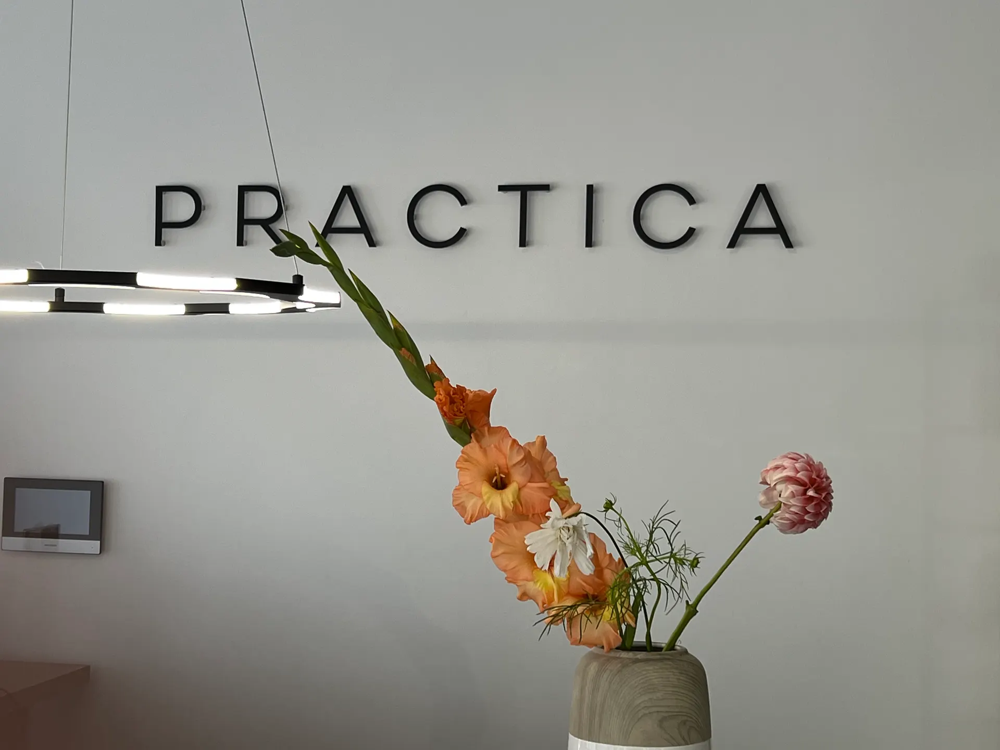
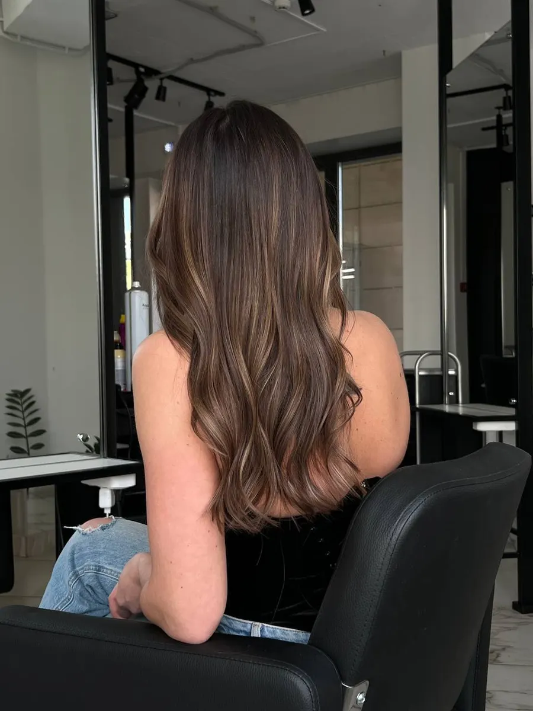
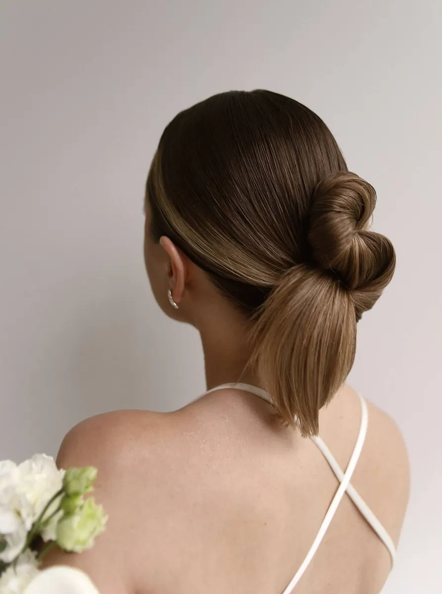
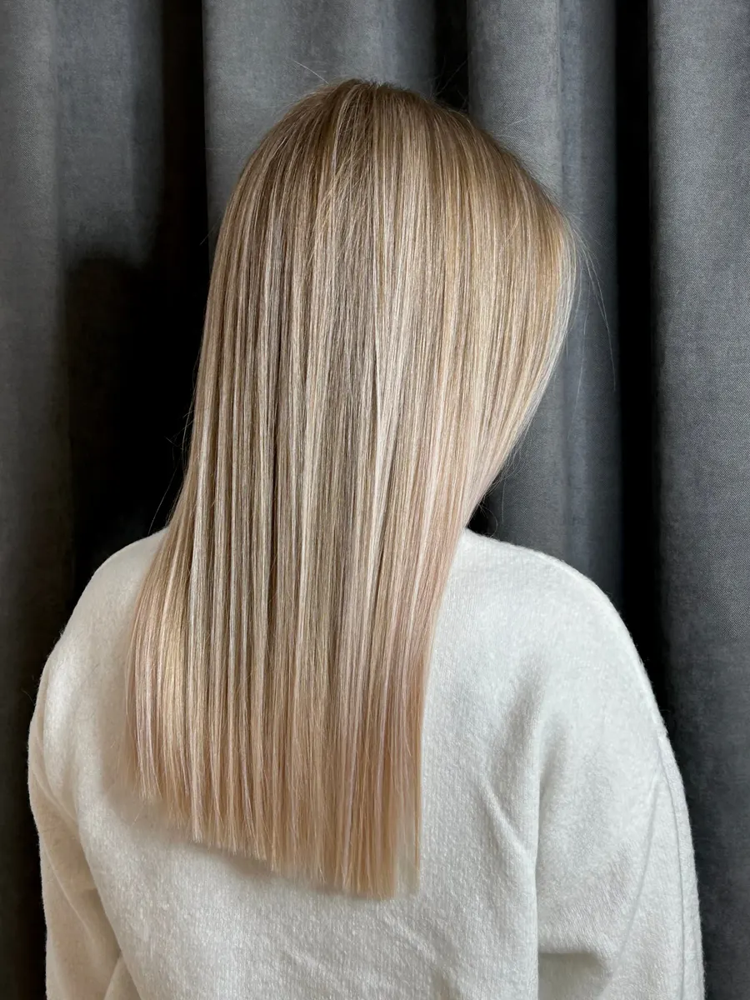

Окрашивание · стрижки · прически · макияж
Салон красоты
в Ижевске:
окрашивание
и стрижки
Мастера четырёх категорий, уход Davines, Nashi и Tokio, свадебные причёски и макияж. Ул. Максима Горького, 150. Ежедневно с 10:00 до 20:00.
- Мастера: от Топ-мастера до Старшего эксперта
- Сложное окрашивание, стрижки, свадебные причёски
- Ежедневно, 10:00–20:00

Что входит в цену
Входит
- Total blonde: осветление корней до 3 см и тонирование всей длины
- Для сложного окрашивания категорию мастера выбираете при записи
- Репетиция свадебной причёски и макияжа записывается отдельно
Отдельно, если нужно
- Стрижка при окрашивании или уходе: 2500–3000 ₽, отдельно её не заказать
- Уход Nashi, Tokio, Davines или Beauty Genesis: от 2500 ₽, при окрашивании дешевле
Цены на окрашивание, стрижки, прически и макияж
Цены из карточки салона на Яндекс.Картах (сервис онлайн-записи). Цена окрашивания зависит от категории мастера: Топ-мастер, Специалист, Эксперт, Старший эксперт. Ниже цены у Топ-мастера и Старшего эксперта.
Окрашивание
- Тонирование или стойкое окрашивание, Топ-мастер6 500 ₽
- Тонирование или стойкое окрашивание, Старший эксперт8 000 ₽
- Сложное окрашивание (Airtouch, Shatush), Топ-мастер12 500 ₽
- Сложное окрашивание (Airtouch, Shatush), Старший эксперт16 500 ₽
- Контуринг, Топ-мастер9 000 ₽
- Total blonde коррекция, Топ-мастеросветление корней до 3 см и тонирование всей длины7 500 ₽
Стрижки и уход
- Стрижка, Специалист4 500 ₽
- Стрижка, Эксперт5 500 ₽
- Каскадная стрижка5 500 ₽
- Стрижка при окрашивании или уходе, Специалистне самостоятельная услуга: записываетесь на окрашивание или уход2 500 ₽
- Уход Tokio Inkarami6 000 ₽
- Уход Nashi Argan Filler Therapy6 500 ₽
- Уход Davines при окрашивании2 500 ₽
Прически, макияж, брови
- Укладка2 000 ₽
- Прическа3 000 ₽
- Свадебная прическарепетиция 2500 ₽3 000 ₽
- Макияж2 500 ₽
- Свадебный макияжрепетиция 2500 ₽3 000 ₽
- Оформление бровей с окрашиванием1 400 ₽
- Ламинирование ресниц2 100 ₽
Цены других категорий мастеров (Специалист, Эксперт) назовёт администратор.
Как проходит визит
- 01
Запись
Пишете в WhatsApp или Telegram, звоните или выбираете время на сайте.
- 02
Мастер
Выбираете категорию мастера: Топ-мастер, Специалист, Эксперт или Старший эксперт.
- 03
Консультация
Мастер выслушивает пожелания, как пишут клиентки: понимает, что вы хотите.
- 04
Услуга
Окрашивание, стрижка, прическа или макияж, при желании уход.
- 05
Чай
Клиентки пишут, что их угощают вкусным чаем.



Что отмечают клиенты
Понимают, что вы хотите
Клиентки пишут, что мастер выполнил именно то, что они хотели, и ответил на все вопросы.
Идеальные окрашивания и уходы
Постоянная клиентка отмечает, что окрашивания и уходы всегда получаются идеальными.
Эстетичный интерьер и вежливый персонал
В отзывах пишут про красивый интерьер, вежливый персонал и готовность помочь.
Отзывы с Яндекс.Карт
«Хожу уже давно в этот салон и всегда получаются идеальные окрашивания и отличные уходы для волос Хочу отдельно выразить благодарность мастеру Марии Ендеревой ! Очень аккуратно работает и всегда понимает , что я хочу»
Ирина Макарова · 27 мая
«Была на услуге окрашивания у Дарьи ,мастер очень понравился ,выполнил то ,что я так хотела ,ответила на все вопросы Клиентоориентированность на высшем уровне , угостили,напоили вкусным чаем и счастливой отправили домой»
Angelina A. · 31 августа
«Прекрасный салон! Очень эстетичный, красивый интерьер, замечательный, вежливый персонал, всегда готовы помочь! Находится здесь одно удовольствие! Просто волшебный мастер Наталья Глухова, которая создаст вам чудесные макияж и укладку, которые будут подходить именно вам»
Екатерина Ефремова · 28 июня
Отзывы с карточки на Яндекс.Картах, без правок.
Частые вопросы
Где находится салон?
Ижевск, улица Максима Горького, 150.
Как работает салон?
Каждый день с 10:00 до 20:00.
От чего зависит цена?
От категории мастера: Топ-мастер, Специалист, Эксперт, Старший эксперт. Например, сложное окрашивание стоит от 12 500 ₽ у Топ-мастера до 16 500 ₽ у Старшего эксперта.
Можно ли сделать стрижку без окрашивания?
Да, стрижка Специалист 4500 ₽, Эксперт 5500 ₽. Стрижка при окрашивании или уходе дешевле, но отдельно её не заказать.
Делаете ли свадебные прически и макияж?
Да: свадебная прическа 3000 ₽, свадебный макияж 3000 ₽, репетиция каждой 2500 ₽.
Напишите, когда вам удобно
- Адрес
- ул. Максима Горького, 150, Ижевск
- Часы
- Ежедневно 10:00–20:00
- Телефон
- +7 (912) 856-61-56